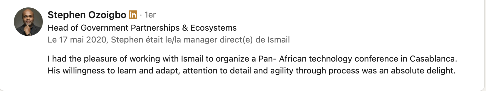
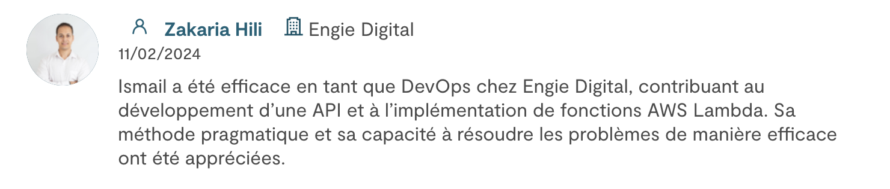
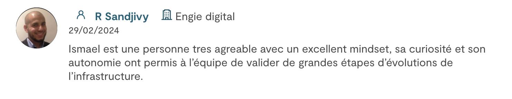

Expert in Python Development & AWS Automation for High-Performance Cloud Solutions.
Looking to strengthen your team? Want to optimize your cloud infrastructure and automate your processes? You're in the right place.
üèÜ Cloud DevOps Infra Expert | Python Developer with +6 Years of Experience
üöÄ Specialist in Cloud Infrastructure and Process Automation
⚡️ Advanced Proficiency in AWS, Python, API Development, and CI/CD
üõ†Ô∏è Industry Experience in Energy, Cloud Solutions, Automotive, and Bioinformatics
✅ AWS Cloud Practitioner and CKAD Kubernetes Certified
I've worked with major companies and successful startups:
• Engie Digital (Cloud Infrastructure and Optimization)
• 3DS Outscale (API Development and sovereign cloud)
• Renault (Test automation for connected vehicles)
• LORIA/INRIA (Bioinformatics projects)
☁️ Deployment and management of cloud infrastructures on AWS
üõ∞Ô∏è Development of optimized CI/CD pipelines: Jenkins, GitHub Actions
ü§ñ Infrastructure as Code (IaC): Terraform, CloudFormation
üìä Monitoring: Grafana, CloudWatch, Checkov
üî¨ Automated testing: Unit, Integration, E2E
üêç Python and API development
üåê Responsive websites and e-commerce (WordPress and custom)
üì£ Digital marketing: Facebook Ads, TikTok Ads, Google Ads
üì° Cloud DevOps Consultant @Devoteam for Engie Digital
üß™ Python API Developer @ 3DS Outscale
üöó QA Engineer at Renault, specialized in connected vehicles
üߨ Experience in bioinformatics at LORIA/INRIA
üåä Diving enthusiast, club member
❤️ Former volunteer lifeguard
üåç Multilingual: French, English, Spanish, Arabic
Available for missions in Cloud, DevOps, Python development, and QA. From cloud infrastructure to digital marketing, I adapt quickly to your specific needs! Ready to tackle your tech and business challenges!
For more, see my jobs history and my list of projects, or contact me.
I respond in less than 1 hour, when shall we discuss? ➡️ lookingforismail@gmail.com
As part of the API Product Quality team, I collaborated closely with development and R&D teams, taking on both technical and functional roles. I gained expertise in test automation and continuous integration within a cloud-based environment, fully aligned with AWS compatibility.
Cloud, Outscale API, Python3, SQL, Shell, Linux Env, Docker, CI/CD, Terraform, Jenkins, Atlassian Suite, Git, Gitlab, Grafana, Kibana.
with an interest to the automotive industry and with no previous experience
in that sector, I joined the Multimedia System team which tests several services of different
Connected Vehicles Projects.
I was able to adapt and overcome the difficulties resulting in being a technical referent
for a team in Russia,
an opportunity to sharp my English communication and continue working on an International
environment.
Python, Shell, Jira, Confluence, Silk Central, HP Quality Center, vNext Microsoft, Microsoft Azure, SQL, Restlet API, Postman, WinSCP, ADB, Linux, smTrace, CANalyzer
You can email me at lookingforismail@gmail.com